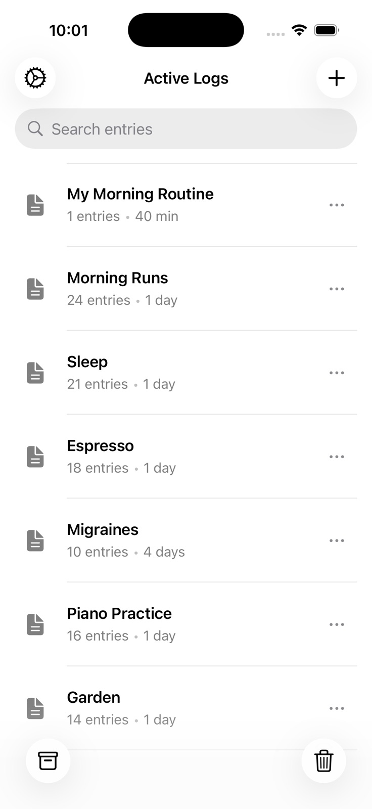
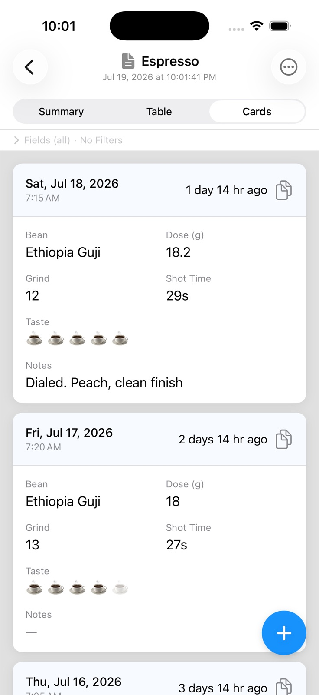
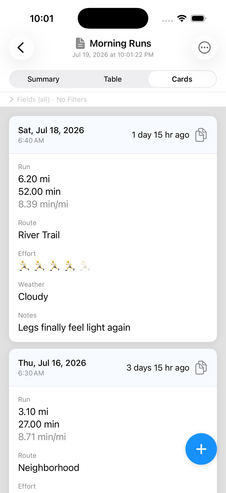
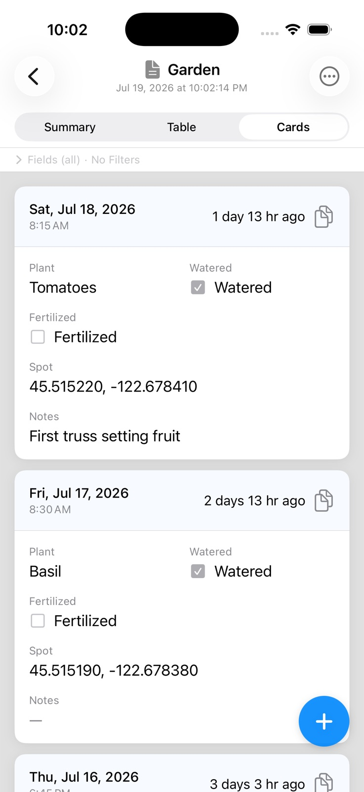

Track anything. Your way.
Build custom tracking logs with exactly the fields you need — then keep every entry on your iPhone. Private by design. No account, no cloud. One-time purchase — no subscription.
Requires iPhone with iOS 18 or later.

Most give you rigid templates that almost fit: missing the one field you need, or packed with ten you don't. LogHound lets you choose the fields. Track anything, from blood pressure to oil changes.
Severity, triggers, what you ate, and what helped — for migraines, allergies, or a chronic condition.
GPS distance and pace, plus the route, effort, and weather that made it feel the way it did.
Systolic, diastolic, pulse, and time of day — with a CSV you can hand to your doctor.
Bean, dose, grind setting, shot time, and how it actually tasted. Find the shot again next week.
What you took, the dose, and exactly when. Settles "did I already take it?"
How you slept and what came before it — caffeine, alcohol, a late meal. The parts a wearable can't tell you.
Weight alongside waist, body fat, or a note on how the week went — the fields are yours to choose.
Weight, feeding, and daily readings for a pet that needs watching — with a CSV you can hand to anyone.
Oil changes, tire rotations, filter swaps, gutters — everything you'll otherwise swear you already did.
LogHound comes with six example logs to show what's possible. Here are three. Borrow an idea, then build the log you actually need.

Bean, dose, grind, shot time, taste, notes. Six fields you chose, so next week you can find the shot again instead of guessing.

Distance and pace come from GPS. Route, effort, weather, and how it felt come from you — the parts a watch never asks about.

Which plant, watered, fertilized, and exactly where it's growing. Settles the "did I already do that?" argument with yourself.
Name it and start building your schema.
Choose from 10 field types to match what you're tracking.
Record entries, view summaries, and export anytime.
Powerful features that stay out of your way.
10 field types to build any log: text, number, toggle, single/multi select, date/time, duration, rating, location, and distance/pace.
See it in action →
See your data your way with card, table, and summary views. Aggregations like sum, average, and count built in.
See it in action →
Capture your location, or track distance and pace live with GPS — ideal for runs, walks, rides, and hikes.
*Distance and pace rely solely on GPS and are approximate — they can overestimate distances in hilly or urban areas.
Full-text search across all logs plus reusable per-log filters with rich operators for every field type.
See it in action →
CSV export per log for spreadsheets. Full .loghound backup and restore to keep your data safe across devices.
See it in action →
All data stays on your device. No cloud sync, no accounts, no analytics. Your logs are yours alone.
Everything unlocked free for 30 days. Then $9.99 once — no subscription, ever.
Unlocks every feature permanently. No account to create, nothing to renew, and no premium tier holding your own data hostage.
US pricing. Local prices vary by App Store region.
Browse common questions or visit the full help center.
Visit the Help Center